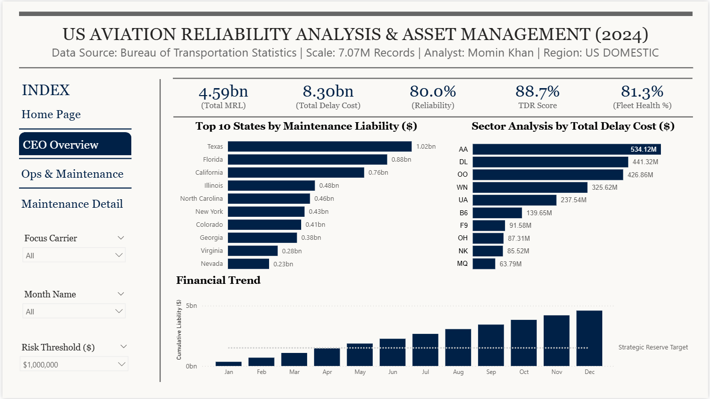
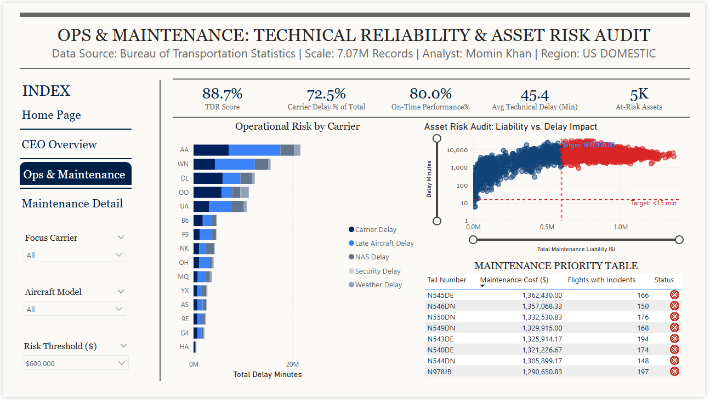
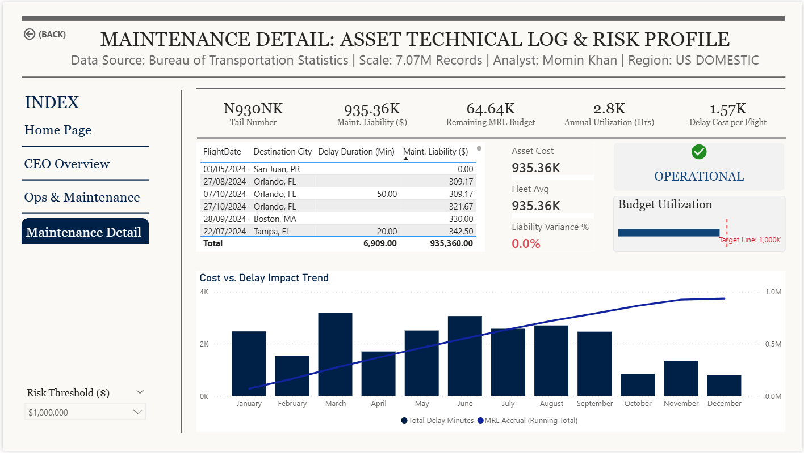

Executive Summary
Engineered an enterprise-grade analytical model to audit domestic commercial flight data, isolating controllable carrier maintenance failures from uncontrollable external airspace factors. The dashboard transitions organizational focus from descriptive reporting to prescriptive asset management, identifying high-risk aircraft bleeding capital and destroying passenger experience.
7.07MRecords Processed
$4.59BMaintenance Liability
5,911Unique Aircraft Tracked
Architectural & Engineering Achievements
1. Data Pipeline & Semantic Modeling
- DuckDB Backend: Processed 7.07 million raw flight records utilizing DuckDB for high-performance, in-memory analytical querying prior to Power BI ingestion.
- Star Schema Design: Transitioned from flat-file reporting to a highly optimized dimensional model, establishing explicit grain hierarchies between aggregate fleet metrics and individual asset (Tail Number) technical logs.
- Upstream Transformation: Enforced data hygiene by pushing date/time formatting and type conversions into Power Query (M-Code), completely bypassing frontend DAX rendering limitations to ensure absolute pipeline stability.
2. Advanced DAX & Prescriptive Logic
- Dynamic Risk Thresholding: Engineered parameterized DAX measures allowing executives to input custom financial constraints (e.g., $600k threshold), instantly recalculating fleet compliance and dynamically triggering SVG-based "OVERHAUL REQUIRED" alerts on asset profiles.
- Outlier Detection (The "Kill Zone"): Built a dual-axis scatter plot model measuring Delay Impact vs. Financial Liability. Implemented distinct dynamic reference lines to visually isolate the top 1% of rogue aircraft requiring immediate grounding.
3. UI/UX & Human-Centric Design
- Gestalt Grid Alignment: Applied strict X/Y coordinate mapping to establish a professional, McKinsey-style Z-pattern layout, eliminating cognitive friction and ensuring seamless data navigation.
- Maximizing Data-Ink Ratio: Ruthlessly eliminated redundant axis titles, gridlines, and nested scrollbars. Replaced spatially distorted geographic maps with mathematically precise Top N sorted bar charts to accelerate executive time-to-insight.
- Bullet Chart Execution: Deployed target-based bullet charts for budget utilization tracking, avoiding spatially wasteful gauge visuals and providing linear, instantly readable variance tracking.
The Analytical Engine
A. CEO-Level Executive Summary
A macro-level view of the $4.59 Billion liability. Features a dynamic DAX combo chart injecting a strategic reserve target line across the financial timeline.

B. The "Kill Zone" (Asset Risk Audit)
A dual-axis scatter plot engineered for Outlier Detection. By plotting Total Maintenance Liability against Delay Impact, the model creates a dynamic "Kill Zone" (Red Quadrant) that isolates the top 1% of rogue aircraft.

C. Granular Drill-Through (Asset Profile)
Forensic-level detail utilizing cross-filtered context to investigate specific tail numbers. Features a dense Financial Health Profile with linear bullet charts tracking run-rate costs against the budget.

Business Impact
This model shifts aviation maintenance strategy from reactive to predictive. By utilizing Top N dynamic filtering and absolute cross-filtering across the semantic model, maintenance directors can filter through billions of dollars in operational liability to find the specific Tail Number requiring immediate overhaul in under three clicks.